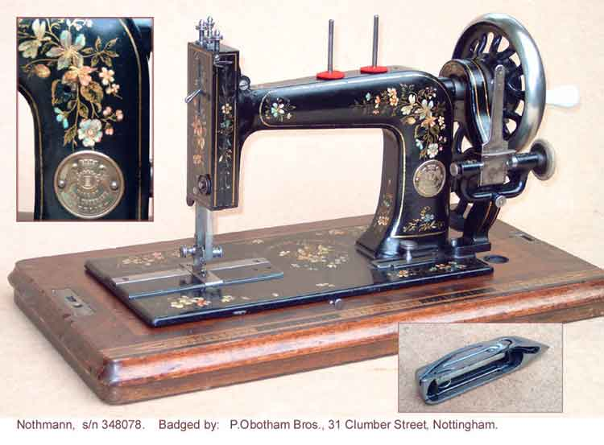
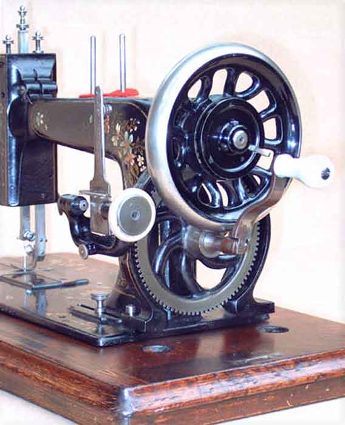

Gebruder Nothmann, Berlin
Serial # 348078
Front View, Logo & Shuttle / Handcrank Gearing
Pictures courtesy of David Stirling
Front View, Logo & Shuttle

Handcrank Gearing

©
Alan Quinn 2003 All Rights Reserved
This page may not be reproduced or distributed in part or in whole without the prior written permission of the copyright owner